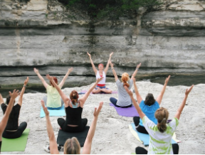

- 趣味さがし -
ヨガ

コミュニティを探す >>
ヨガは、身体と心を健康に保つための総合的なエクササイズであり、年齢や性別に関係なく誰にでも取り組みやすいものです。
50代以上の女性にとって、ヨガは以下のようなメリットがあると言えます。
- 健康維持に役立つ
- 骨粗鬆症予防に効果的
- 睡眠の質を向上させる
- 社交的な交流の場になる
：ヨガは、筋力や柔軟性を高め、心肺機能を改善することができます。さらに、ストレスを軽減し、免疫力を高めるなど、全体的な健康維持に役立つことが知られています。
：ヨガは、骨密度を高め、骨粗鬆症の予防に効果的です。50代以上の女性にとって、骨粗鬆症は一般的な健康問題の一つであるため、ヨガは特に有効な運動方法と言えます。
：ヨガには、リラックス効果があり、睡眠の質を向上させることができます。50代以上の女性にとっては、良質な睡眠は健康維持に不可欠な要素であるため、ヨガは有益な運動法と言えます。
：ヨガは、グループで行うことが多く、参加者同士の交流の場としても機能します。特に、50代以上の女性にとっては、社交的な交流の場が少なくなっていくことが多いため、ヨガは良い機会と言えます。
以上のように、ヨガは、身体と心の健康を同時に維持することができるため、より健康的なライフスタイルを実現するのに役立ちます。また、初心者でも簡単に始めることができ、自分のペースで取り組めるため、ストレスなく続けることができるでしょう。